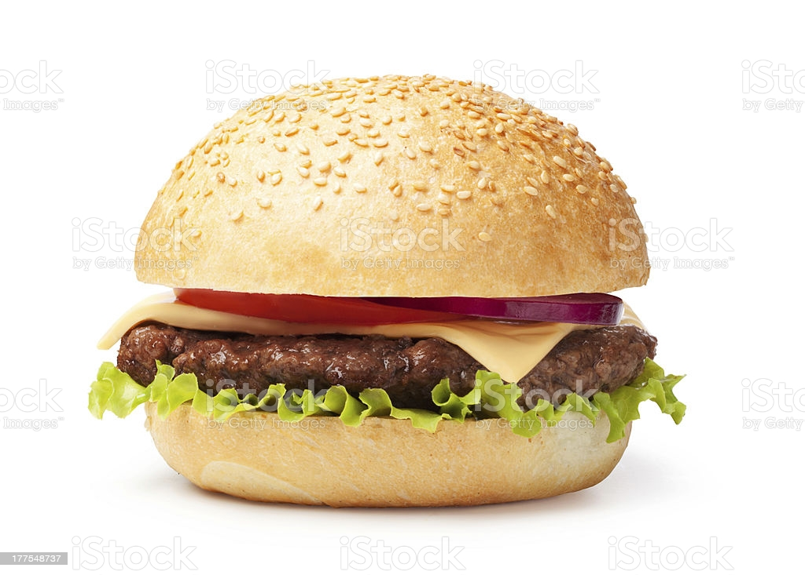

Hamburger

Descriptions
This is a recipe for hamburger
Ingredients
- 2 cups warm milk (110 degrees F/45 degrees C)
- ¼ cup margarine, melted
- ¼ cup warm water
Steps
- In a large bowl, stir together the milk, margarine, warm water, sugar and yeast. Let stand for about 5 minutes.
- Mix in the salt, and gradually stir in the flour until you have a soft dough. Divide into 25 pieces, and form into balls. Place on baking sheets so they are 2 to 3 inches apart. Let rise for 20 minutes.
- Preheat the oven to 375 degrees F (190 degrees C). Bake the rolls for 15 minutes in the preheated oven. Cool slightly, then split them in half horizontally to fill with your favorite burgers.